Lecciones de circuitos eléctricos - Volumen IV
Capítulo 8
MAPEO DE KARNAUGH
- Introduction
- Venn diagrams and sets
- Boolean Relationships on Venn Diagrams
- Making a Venn diagram look like a Karnaugh map
- Karnaugh maps, truth tables, and Boolean expressions
- Logic simplification with Karnaugh maps
- Larger 4-variable Karnaugh maps
- Minterm vs maxterm solution
- Σ (sum) and Π (product) notation
- Don't care cells in the Karnaugh map
- Larger 5 & 6-variable Karnaugh maps
Autor original: Dennis Crunkilton
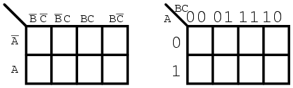
Introduction
¿Por qué aprender sobrekarnaughmapas? El mapa de Karnaugh, al igual que el álgebra de Boole, es una herramienta de simplificación aplicable a la lógica digital. Consulte "Incinerador de desechos tóxicos" en el capítulo de álgebra booleana para ver un ejemplo de simplificación booleana de la lógica digital. El mapa de Karnaugh simplificará la lógica de forma más rápida y sencilla en la mayoría de los casos.
La simplificación booleana es en realidad más rápida que el mapa de Karnaugh para una tarea que involucra dos o menos variables booleanas. Todavía es bastante utilizable en tres variables, pero un poco más lento. Con cuatro variables de entrada, el álgebra booleana se vuelve tediosa. Los mapas de Karnaugh son más rápidos y más fáciles. Los mapas de Karnaugh funcionan bien con hasta seis variables de entrada y se pueden utilizar con hasta ocho variables. Para más de seis a ocho variables, la simplificación debe realizarse medianteCAD(diseño automatizado por ordenador).
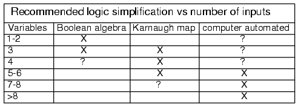
En teoría, cualquiera de los tres métodos funcionará. Sin embargo, en la práctica, las directrices anteriores funcionan bien. Normalmente no recurriríamos a la automatización informática para simplificar un bloque lógico de tres entradas. Antes podríamos resolver el problema con lápiz y papel. Sin embargo, si tuviéramos que resolver siete de estos problemas, digamos durante unBCD(Decimal codificado en binario) adecodificador de siete segmentos, es posible que queramos automatizar el proceso. Un decodificador BCD a siete segmentos genera las señales lógicas para controlar una pantalla LED (diodo emisor de luz) de siete segmentos.
Ejemplos de lenguajes de diseño automatizados por computadora para la simplificación de la lógica son PALASM, ABEL, CUPL, Verilog y VHDL. Estos programas aceptan unlenguaje descriptivo de hardwarearchivo de entrada que se basa en ecuaciones booleanas y produce un archivo de salida que describe unareducido(o simplificada) solución booleana. No necesitaremos tales herramientas en este capítulo. Pasemos a los diagramas de Venn como introducción a los mapas de Karnaugh.
Venn diagrams and sets
Los matemáticos usandiagramas de vennmostrar las relaciones lógicas deconjuntos(colecciones de objetos) entre sí. Quizás ya hayas visto diagramas de Venn en tus estudios de álgebra u otros estudios de matemáticas. Si es así, es posible que recuerdes los círculos superpuestos y elunión and intersecciónde conjuntos. Revisaremos los círculos superpuestos del diagrama de Venn. Adoptaremos los términos OR y AND en lugar de unión e intersección, ya que esa es la terminología utilizada en electrónica digital.
El diagrama de Venn une el álgebra de Boole de un capítulo anterior con el mapa de Karnaugh. Relacionaremos lo que ya sabe sobre el álgebra booleana con los diagramas de Venn y luego pasaremos a los mapas de Karnaugh.
A setes una colección de objetos de un universo como se muestra a continuación. Elmiembrosdel conjunto son los objetos contenidos dentro del conjunto. Los miembros del conjunto suelen tener algo en común; sin embargo, esto no es un requisito. Fuera del universo de los números reales, por ejemplo, el conjunto de todos los números enteros positivos {1,2,3...} es un conjunto. El conjunto {3,4,5} es un ejemplo de un conjunto más pequeño, osubconjuntodel conjunto de todos los números enteros positivos. Otro ejemplo es el conjunto de todos los varones fuera del universo de estudiantes universitarios. ¿Puedes pensar en algunos ejemplos más de conjuntos?
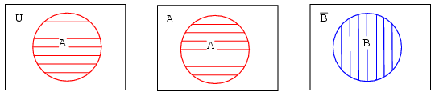
Arriba a la izquierda, tenemos un diagrama de Venn que muestra el conjunto A en el círculo dentro del universo U, el área rectangular. Si todo lo que está dentro del círculo es A, entonces todo lo que está fuera del círculo no es A. Por lo tanto, arriba del centro, etiquetamos el área rectangular fuera del círculo A como A-no en lugar de U. Mostramos B y B-no de manera similar.
¿Qué sucede si tanto A como B están contenidos dentro del mismo universo? Mostramos cuatro posibilidades.
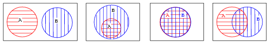
Echemos un vistazo más de cerca a cada una de las cuatro posibilidades como se muestra arriba.
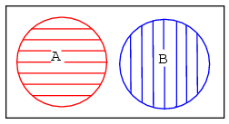
El primer ejemplo muestra que el conjunto A y el conjunto B no tienen nada en común según el diagrama de Venn. No hay superposición entre las regiones sombreadas circulares A y B. Por ejemplo, supongamos que los conjuntos A y B contienen los siguientes miembros:
conjunto A = {1,2,3,4}
conjunto B = {5,6,7,8}
Ninguno de los miembros del conjunto A está contenido en el conjunto B, ni ninguno de los miembros de B está contenido en A. Por tanto, no hay superposición de los círculos.
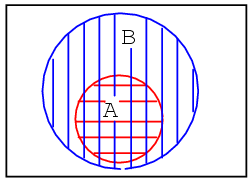
En el segundo ejemplo del diagrama de Venn anterior, el conjunto A está totalmente contenido dentro del conjunto B. ¿Cómo podemos explicar esta situación? Supongamos que los conjuntos A y B contienen los siguientes miembros:
conjunto A = {1,2}
conjunto B = {1,2,3,4,5,6,7,8}
Todos los miembros del conjunto A también son miembros del conjunto B. Por lo tanto, el conjunto A es un subconjunto del conjunto B. Dado que todos los miembros del conjunto A son miembros del conjunto B, el conjunto A se dibuja completamente dentro de los límites del conjunto B.
Hay un quinto caso, no mostrado, con los cuatro ejemplos. Pista: es similar al último (cuarto) ejemplo. Dibuja un diagrama de Venn para este quinto caso.
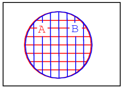
El tercer ejemplo anterior muestra una superposición perfecta entre el conjunto A y el conjunto B. Parece que ambos conjuntos contienen los mismos miembros idénticos. Supongamos que los conjuntos A y B contienen lo siguiente:
conjunto A = {1,2,3,4} conjunto B = {1,2,3,4}
Por lo tanto,
Conjunto A = Conjunto B
Los conjuntos Y B son idénticamente iguales porque ambos tienen los mismos miembros idénticos. Las regiones A y B dentro del diagrama de Venn correspondiente anterior se superponen completamente. Si tiene alguna duda sobre lo que representan los patrones anteriores, consulte cualquier figura arriba o abajo para estar seguro de cómo eran las regiones circulares antes de superponerse.
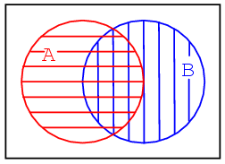
El cuarto ejemplo anterior muestra que hay algo en común entre el conjunto A y el conjunto B en la región superpuesta. Por ejemplo, seleccionamos arbitrariamente los siguientes conjuntos para ilustrar nuestro punto:
conjunto A = {1,2,3,4}
conjunto B = {3,4,5,6}
El conjunto A y el conjunto B tienen los elementos 3 y 4 en común. Estos elementos son la razón de la superposición en el centro común a A y B. Necesitamos analizar más de cerca esta situación.
Boolean Relationships on Venn Diagrams
El cuarto ejemplo tieneAparcialmente superpuestoB. Sin embargo, primero veremos toda el área sombreada a continuación y luego solo la región superpuesta. Asignemos algunas expresiones booleanas a las regiones anteriores como se muestra a continuación. Abajo a la izquierda hay un área rayada horizontal roja paraA. Hay un área rayada vertical azul paraB.
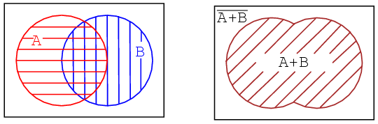
Si observamos el área completa de ambos, independientemente del estilo de sombreado, la suma total de todas las áreas sombreadas, obtenemos la ilustración de arriba a la derecha que corresponde al inclusivo.ORfunción de A, B. La expresión booleana esA+B. Así lo demuestran los 45oárea sombreada. Todo lo que esté fuera del área sombreada corresponde a(A+B)-nocomo se muestra arriba. Pasemos a la siguiente parte del cuarto ejemplo.
La otra forma de ver un diagrama de Venn con círculos superpuestos es mirar solo la parte común a ambos.A and B, el área de doble trama abajo a la izquierda. La expresión booleana para esta área común correspondiente a laANDla función esABcomo se muestra abajo a la derecha. Tenga en cuenta que todo lo que esté fuera del doble sombreadoAB is AB-no.
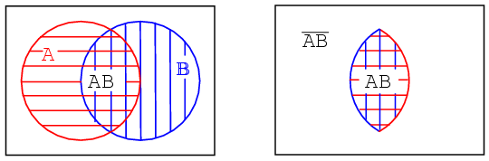
Tenga en cuenta que algunos de los miembros deA, arriba, son miembros de(AB)'. Algunos de los miembros deBson miembros de(AB)'. Pero ninguno de los miembros de(AB)'están dentro del área doblemente sombreadaAB.
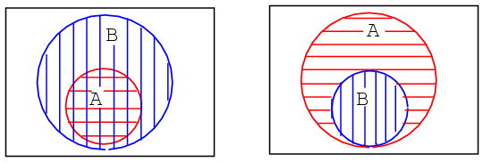
Hemos repetido el segundo ejemplo arriba a la izquierda. Su quinto ejemplo, que esbozó anteriormente, se proporciona arriba a la derecha para comparar. Posteriormente encontraremos algún que otro elemento, o grupo de elementos, totalmente contenido dentro de otro grupo en un mapa de Karnaugh.
A continuación, mostramos el desarrollo de una expresión booleana que involucra una variable complementada.
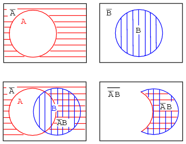
Ejemplo:(arriba)
Muestre un diagrama de Venn paraA'B(A-no Y B).
Solución:
Comenzando arriba a la izquierda tenemos un sombreado horizontal rojo.A'(A-no), entonces, arriba a la derecha,B. A continuación, abajo a la izquierda, formamos la función ANDA'Bsuperponiendo las dos regiones anteriores. La mayoría de la gente usaría esto como respuesta al ejemplo planteado. Sin embargo, sólo los dobles eclosionadosA'Bse muestra en el extremo derecho para mayor claridad. la expresiónA'Bes la región donde ambosA' and Bsuperposición. La región clara fuera deA'B is (A'B)', que no formaba parte del ejemplo planteado.
Probemos algo similar con el booleano.ORfunción.
Ejemplo:
EncontrarB'+A
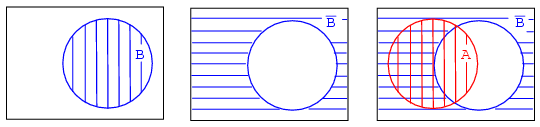
Solución:
Arriba a la derecha comenzamos conBque se complementa conB'. Finalmente superponemosAencima deB'. Ya que estamos interesados en formar elORfunción, buscaremos todas las áreas sombreadas independientemente del estilo de sombreado. De este modo,A+B'es toda el área sombreada arriba a la derecha. Se muestra como una única región rayada abajo a la izquierda para mayor claridad.
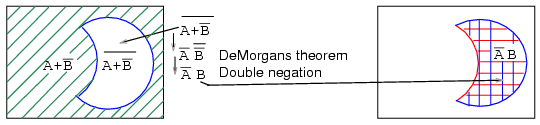
Ejemplo:
Encontrar(A+B')'
Solución:
El verde 45o A+B'El área sombreada fue el resultado del ejemplo anterior. Pasando a un a,(A+B')'En el presente ejemplo, arriba a la izquierda, encontremos el complemento deA+B', que es el área blanca clara arriba a la izquierda correspondiente a(A+B')'. Tenga en cuenta que hemos repetido, a la derecha, elAB'resultado de doble rayado de un ejemplo anterior para compararlo con nuestro resultado. Las regiones correspondientes a(A+B')' and AB'arriba, izquierda y derecha, respectivamente, son idénticas. Esto se puede demostrar con el teorema de DeMorgan y la doble negación.
Esto trae a colación un punto. Los diagramas de Venn en realidad no prueban nada. Se necesita álgebra booleana para demostraciones formales. Sin embargo, los diagramas de Venn se pueden utilizar para verificación y visualización. Hemos verificado y visualizado el teorema de DeMorgan con un diagrama de Venn.
Ejemplo:
¿Qué significa la expresión booleana?A'+B'¿Cómo se ve en un diagrama de Venn?
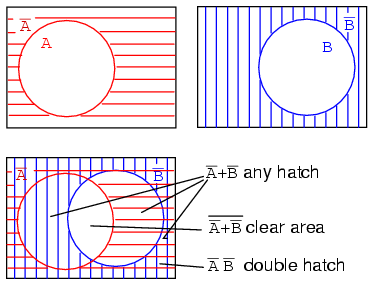
Solución:figura anterior
Comience con un sombreado horizontal rojo.A'y rayado vertical azulB'arriba. Superponga los diagramas como se muestra. Todavía podemos ver elA'trampilla horizontal roja superpuesta a la otra trampilla. También completa lo que solía ser parte delBcírculo (B-verdadero), pero sólo esa parte delBcírculo abierto no común a laAcírculo abierto. Si sólo miramos elB'trampilla vertical azul, llena esa parte del espacio abiertoAcírculo no común aB. Cualquier región con algún sombreado, independientemente del tipo, corresponde aA'+B'. Es decir, todo menos el espacio en blanco abierto en el centro.
Ejemplo:
¿Qué significa la expresión booleana?(A'+B')'¿Cómo se ve en un diagrama de Venn?
Solución:figura arriba, abajo a la izquierda
Mirando el espacio blanco abierto en el centro, lo es todo.NOTen la solución anterior deA'+B', que es(A'+B')'.
Ejemplo:
mostrar eso(A'+B')' = AB
Solución:debajo de la figura, abajo a la izquierda
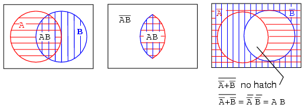
Anteriormente mostramos en el diagrama de arriba a la derecha que la región abierta blanca es(A'+B')'. En un ejemplo anterior mostramos una región doblemente sombreada en la intersección (superposición) deAB. Estas son las figuras de la izquierda y del medio que se repiten aquí. Comparando los dos diagramas de Venn, vemos que esta región abierta,(A'+B')', es lo mismo que la región doblemente sombreadaAB(A Y B). También podemos probar que(A'+B')'=ABpor el teorema de DeMorgan y la doble negación como se muestra arriba.
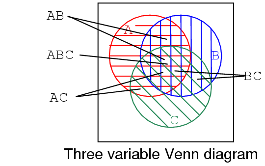
Mostramos un diagrama de Venn de tres variables arriba con regionesA(horizontal rojo),B(vertical azul), y,C(verde 45o). En el centro, observe que las tres regiones se superponen y representan una expresión booleana.ABC. También hay una región más grande en forma de pétalo dondeA and Bsuperposición correspondiente a la expresión booleanaAB. De manera similarA and Csuperposición produciendo expresión booleanaAC. YB and Csuperposición produciendo expresión booleanaBC.
Si observamos el tamaño de las regiones descritas por las expresiones AND anteriores, vemos que el tamaño de la región varía con el número de variables en la expresión AND asociada.
- A, 1 variable es una región circular grande.
- AB, 2 variables es una región más pequeña con forma de pétalo.
- ABC, 3 variables es la región más pequeña.
- Cuantas más variables haya en el término AND, más pequeña será la región.
Making a Venn diagram look like a Karnaugh map
comenzando con el circuloAen un rectangularUn 'universoEn la figura (a) a continuación, transformamos un diagrama de Venn en casi un mapa de Karnaugh.
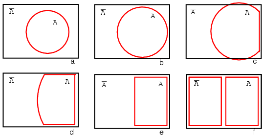
Ampliamos el circuloAen (b) y (c), se ajustan a la forma rectangularUn 'universoen (d), y cambiarAa un rectángulo en (e). Cualquier cosa que quede fuera deA is A' . Le asignamos un rectángulo aA' en (f). Además, no utilizamos sombreado en los mapas de Karnaugh. Lo que tenemos hasta ahora se parece a un mapa de Karnaugh de 1 variable, pero es de poca utilidad. Necesitamos múltiples variables.
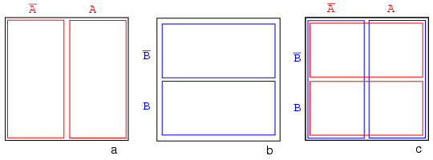
La figura (a) anterior es la misma que el diagrama de Venn anterior que muestraA and A'arriba excepto que las etiquetasA and A'están encima del diagrama en lugar de dentro de las regiones respectivas. Imaginemos que hemos pasado por un proceso similar al de las figuras (a-f) para obtener un "diagrama de Venn cuadrado" paraB and B'como mostramos en la figura central (b). Ahora superpondremos los diagramas de las figuras (a) y (b) para obtener el resultado en (c), tal como lo hemos estado haciendo con los diagramas de Venn. La razón por la que hacemos esto es para que podamos observar lo que puede ser común a dos regiones superpuestas: digamos dóndeAse superponeB. La celda inferior derecha en la figura (c) corresponde aABdóndeAse superponeB.
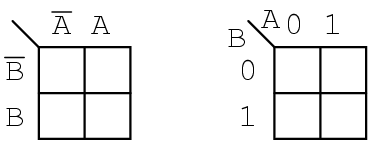
No perdemos el tiempo dibujando un mapa de Karnaugh como (c) arriba, sino que dibujamos una versión simplificada como arriba a la izquierda. La columna de dos celdas debajoA'Se entiende que está asociado conA', y el títuloAestá asociado con la columna de celdas debajo de él. La fila encabezada porB'está asociado con las celdas a su derecha. De manera similarBestá asociado con las celdas a su derecha. En aras de la simplicidad, no delineamos las distintas regiones con tanta claridad como en los diagramas de Venn.
El mapa de Karnaugh arriba a la derecha es una forma alternativa utilizada en la mayoría de los textos. Los nombres de las variables se enumeran al lado de la línea diagonal. ElAencima de la diagonal indica que la variableA(yA') se asigna a las columnas. El0es un sustituto deA', y el1sustitutos deA. ElBdebajo de la diagonal está asociado con las filas:0 for B', y1 for B
Ejemplo:
Marca la celda correspondiente a la expresión booleana.ABen el mapa de Karnaugh de arriba con un1
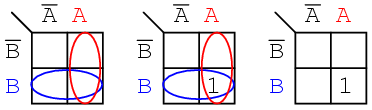
Solución:
Sombrea o encierra en un círculo la región correspondiente aA. Luego, sombree o encierre la región correspondiente aB. La superposición de las dos regiones esAB. Coloque un1en esta celda. No necesariamente incluimos elA and Bregiones como arriba a la izquierda.
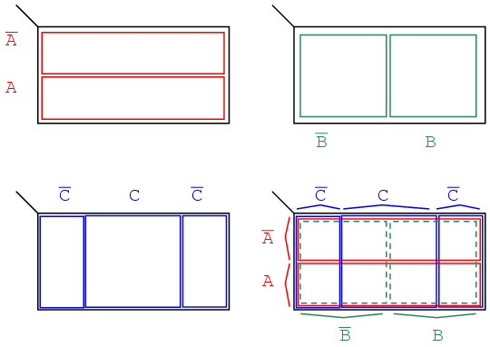
Desarrollamos un mapa de Karnaugh de 3 variables arriba, comenzando con regiones similares al diagrama de Venn. El universo (dentro del rectángulo negro) está dividido en dos regiones rectangulares estrechas y estrechas paraA' and A. las variablesB' and Bdivide el universo en dos regiones cuadradas.Cocupa una región cuadrada en el medio del rectángulo, conC'dividir en dos rectángulos verticales a cada lado delCcuadrado.
En la figura final, superponemos las tres variables, intentando etiquetar claramente las distintas regiones. Las regiones son menos obvias sin impresión en color, más obvias en comparación con las otras tres figuras. Esta 3 variablesK-Mapa(mapa de Karnaugh) tiene 23 = 8 células, los pequeños cuadrados dentro del mapa. Cada célula individual está identificada de forma única por los tres Variables booleanas (A, B, C). Por ejemplo,ABECEDARIO'selecciona de forma única la celda situada más abajo a la derecha (*),ABECEDARIO'selecciona la celda superior izquierda (x).
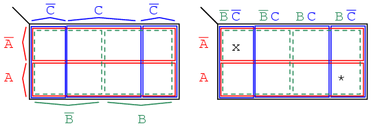
Normalmente no etiquetamos el mapa de Karnaugh como se muestra arriba a la izquierda. Aunque esta figura muestra claramente la cobertura del mapa mediante variables booleanas individuales de una región de 4 celdas. Los mapas de Karnaugh están etiquetados como en la ilustración de la derecha. Cada celda todavía está identificada de forma única por una variable de 3término del producto, un booleanoANDexpresión. Tomemos, por ejemplo,ABECEDARIO'siguiendo elAfila hacia la derecha y laBC'columna hacia abajo, ambas se cruzan en la celda inferior derechaABECEDARIO'. Ver (*) figura arriba.
Las dos formas diferentes anteriores de un mapa de Karnaugh de 3 variables son equivalentes y es la forma final que adopta. La versión de la derecha es un poco más fácil de usar, ya que no tenemos que escribir tantos encabezados alfabéticos booleanos y barras de complemento, solo1arena0s Utilice la forma de mapa de la derecha y busque el de la izquierda en algunos textos. Los encabezados de las columnas de la izquierda.B'C', B'C, BC, BC'son equivalentes a00, 01, 11, 10A la derecha. Los encabezados de filaA, A'son equivalentes a0, 1en el mapa correcto.
Karnaugh maps, truth tables, and Boolean expressions
Maurice Karnaugh, un ingeniero de telecomunicaciones, desarrolló el mapa de Karnaugh en Bell Labs en 1953 mientras diseñaba circuitos de conmutación telefónica basados en lógica digital.
Ahora que hemos desarrollado el mapa de Karnaugh con la ayuda de diagramas de Venn, vamos a utilizarlo. mapas de karnaughreducirfunciones lógicas más rápida y fácilmente en comparación con el álgebra booleana. Por reducir queremos decir simplificar, reducir el número de puertas y entradas. Nos gusta simplificar la lógica a uncosto más bajoforma de ahorrar costes mediante la eliminación de componentes. Definimos el costo más bajo como el menor número de puertas con el menor número de entradas por puerta.
Si se les da la opción, la mayoría de los estudiantes simplifican la lógica con mapas de Karnaugh en lugar de álgebra booleana una vez que aprenden esta herramienta.
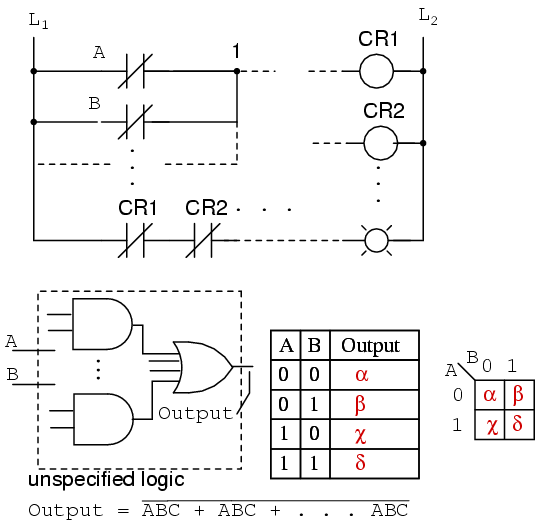
Arriba mostramos cinco elementos individuales, que son simplemente diferentes formas de representar la misma cosa: una función lógica digital arbitraria de 2 entradas. Primero está la lógica de escalera de relevos, luego las puertas lógicas, una tabla de verdad, un mapa de Karnaugh y una ecuación booleana. El caso es que cualquiera de estos es equivalente. Dos entradasA and Bpuede tomar valores de cualquiera de los dos0 or 1, alta o baja, abierta o cerrada, Verdadero o Falso, según sea el caso. hay 22 = 4 combinaciones de insumos que producen un resultado. Esto es aplicable a los cinco ejemplos.
Estas cuatro salidas se pueden observar en una lámpara en la lógica de escalera de relés, en una sonda lógica en el diagrama de puertas. Estos resultados pueden registrarse en la tabla de verdad o en el mapa de Karnaugh. Mire el mapa de Karnaugh como una tabla de verdad reorganizada. La salida de la ecuación booleana puede calcularse mediante las leyes del álgebra booleana y transferirse a la tabla de verdad o al mapa de Karnaugh. ¿Cuál de las cinco descripciones lógicas equivalentes deberíamos utilizar? El que resulta más útil para la tarea a realizar.
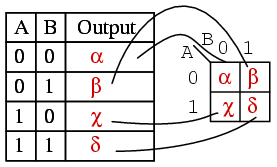
Los resultados de una tabla de verdad corresponden uno a uno a las entradas del mapa de Karnaugh. Comenzando en la parte superior de la tabla de verdad, las entradas A=0, B=0 producen una salida α. Tenga en cuenta que esta misma salida α se encuentra en el mapa de Karnaugh en la dirección de celda A=0, B=0, esquina superior izquierda del mapa K donde se cruzan la fila A=0 y la columna B=0. La otra tabla de verdad genera β, χ, δ a partir de las entradas AB=01, 10, 11 y se encuentran en las ubicaciones correspondientes del mapa K.
A continuación, mostramos las regiones adyacentes de 2 celdas en el mapa K de 2 variables con la ayuda del diagrama de Venn rectangular anterior como regiones booleanas.
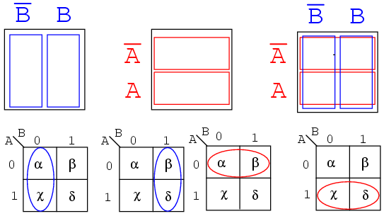
Las celdas α y χ son adyacentes en el mapa K como elipses en el mapa K más a la izquierda a continuación. En referencia a la tabla de verdad anterior, este no es el caso. Hay otra entrada de la tabla de verdad (β) entre ellos. Lo que nos lleva al punto de organizar el K-map en una matriz cuadrada: las celdas con variables booleanas en común deben estar cerca unas de otras para presentar un patrón que salte a la vista. Para las celdas α y χ tienen la variable booleanaB'en común. Sabemos esto porqueB=0(igual queB') para la columna sobre las celdas α y χ. Compare esto con el diagrama de Venn cuadrado sobre el mapa K.
Una línea de razonamiento similar muestra que β y δ tienen valores booleanos.B(B=1) en común. Entonces, α y β tienen valores booleanos.A'(A=0) en común. Finalmente, χ y δ tienen valores booleanos.A(A=1) en común. Compara los dos últimos mapas con el diagrama de Venn del cuadrado del medio.
En resumen, buscamos puntos comunes de variables booleanas entre celdas. El mapa de Karnaugh está organizado para que podamos ver esos puntos en común. Probemos algunos ejemplos.
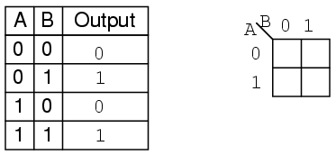
Ejemplo:
Transfiera el contenido de la tabla de verdad al mapa de Karnaugh de arriba.
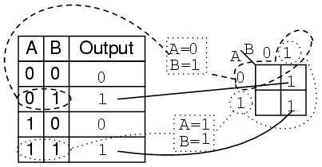
Solución:
La tabla de verdad contiene dos1s. el K-map debe tener ambos. localizar el primero1en la segunda fila de la tabla de verdad anterior.
- tenga en cuenta la dirección AB de la tabla de verdad
- localizar la celda en el K-map que tiene la misma dirección
- colocar un1en esa celda
Ejemplo:
Para el mapa de Karnaugh del problema anterior, escribe la expresión booleana. La solución está a continuación.
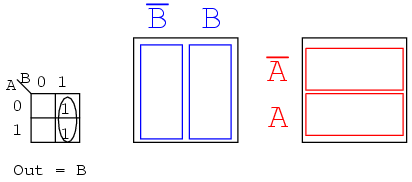
Solución:
Busque celdas adyacentes, es decir, encima o al lado de una celda. Las celdas diagonales no son adyacentes. Las celdas adyacentes tendrán una o más variables booleanas en común.
- Agrupa (encierra en un círculo) los dos1s en la columna
- Encuentre las variables superiores y/o laterales que sean iguales para el grupo. Escríbalo como resultado booleano. EsBen nuestro caso.
- Ignore las variables que no sean iguales para un grupo de células. En nuestro caso, A varía, es 1 y 0, ignore el valor booleano A.
- Ignore cualquier variable que no esté asociada con celdas que contengan unos.B'no tiene nadie debajo. Ignorar B'
- ResultadoOut = B
Esto podría ser más fácil de ver comparándolo con los diagramas de Venn de la derecha, específicamente elBcolumna.
Ejemplo:
Escribe la expresión booleana para el mapa de Karnaugh a continuación.
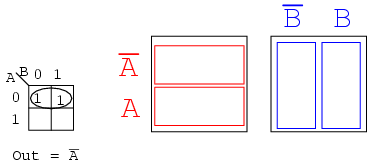
Solución:(arriba)
- Agrupa (encierra en un círculo) los dos1'sen la fila
- Encuentre las variables que son iguales para el grupo,Out = A'
Ejemplo:
Para la siguiente tabla de verdad, transfiera las salidas al Karnaugh y luego escriba la expresión booleana para el resultado.
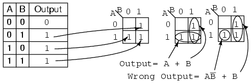
Solución:
Transferir el1s desde las ubicaciones en la tabla de verdad hasta las ubicaciones correspondientes en el K-map.
- Agrupe (encierre en un círculo) los dos unos en la columna debajoB=1
- Agrupe (encierre en un círculo) los dos unos en la fila a la derecha deA=1
- Escriba el término del producto para el primer grupo =B
- Escriba el término del producto para el segundo grupo =A
- Escriba la suma de productos de los dos términos anterioresOutput = A+B
- La celda individual tiene un término producto deAB'
- La solución correspondiente esOutput = AB' + B
- Esta no es la solución más sencilla.
Debemos señalar que cualquiera de las soluciones anteriores, Salida o Salida incorrecta, son lógicamente correctas. Ambos circuitos producen la misma salida. Se trata de que el circuito anterior sea la solución de menor coste.
Ejemplo:
Complete el mapa de Karnaugh para la expresión booleana a continuación, luego escriba la expresión booleana para el resultado.
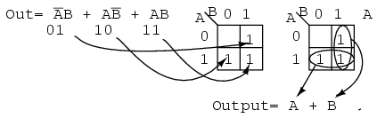
Solución:(arriba)
La expresión booleana tiene tres términos producto. Habrá un1ingresado para cada término de producto. Aunque, en general, el número de1s por término de producto varía con la cantidad de variables en el término de producto en comparación con el tamaño del K-map. El término del producto es la dirección de la celda donde se encuentra el1se ingresa. El primer término del producto,A'B, corresponde a la01celda en el mapa. A1se ingresa en esta celda. Los otros dos términos P se ingresan para un total de tres1s
A continuación, proceda a agrupar y extraer el resultado simplificado como en el problema de tabla de verdad anterior.
Ejemplo:
Simplifique el siguiente diagrama lógico.
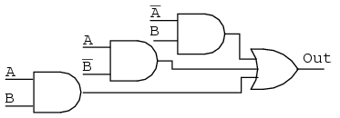
Solución:(Figura siguiente)
- Escriba la expresión booleana para el diagrama lógico original como se muestra a continuación.
- Transfiera los términos del producto al mapa de Karnaugh.
- Formar grupos de celdas como en ejemplos anteriores.
- Escriba expresiones booleanas para grupos como en ejemplos anteriores.
- Dibujar diagrama lógico simplificado
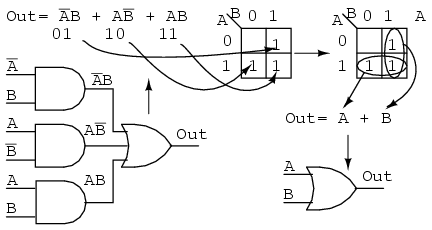
Ejemplo:
Simplifique el siguiente diagrama lógico.
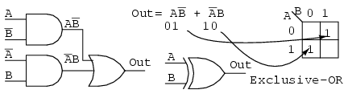
Solución:
- Escriba la expresión booleana para el diagrama lógico original que se muestra arriba.
- Transfiera los términos del producto al mapa de Karnaugh.
- No es posible formar grupos.
- No es posible ninguna simplificación; déjalo como está.
No es posible ninguna simplificación lógica para el diagrama anterior. Esto sucede a veces. Ni los métodos de los mapas de Karnaugh ni el álgebra de Boole pueden simplificar más esta lógica. Mostramos un símbolo esquemático OR exclusivo arriba; sin embargo, esto no es una simplificación lógica. Simplemente hace que un diagrama esquemático se vea mejor. Dado que no es posible simplificar la lógica OR exclusiva y se usa ampliamente, los fabricantes la proporcionan como un circuito integrado básico (7486).
Logic simplification with Karnaugh maps
Los ejemplos de simplificación lógica que hemos hecho podrían haberse realizado con álgebra de Boole con la misma rapidez. Los problemas de simplificación lógica del mundo real exigen mapas de Karnaugh más grandes para que podamos realizar un trabajo serio. Trabajaremos algunos ejemplos artificiales en esta sección, dejando la mayoría de las aplicaciones del mundo real para el capítulo de Lógica Combinatoria. Por artificial nos referimos a ejemplos que ilustran técnicas. Este enfoque desarrollará las herramientas que necesitamos para la transición a las aplicaciones más complejas del capítulo de Lógica Combinatoria.
Mostramos nuestro mapa de Karnaugh desarrollado previamente. Usaremos el formulario de la derecha.
Observe la secuencia de números en la parte superior del mapa. No está en secuencia binaria, lo que sería00, 01, 10, 11. Es00, 01, 11 10, que es la secuencia de código Gray. La secuencia del código Gray solo cambia un bit binario a medida que pasamos de un número al siguiente en la secuencia, a diferencia del binario. Eso significa que las celdas adyacentes solo variarán en un bit o variable booleana. Esto es lo que necesitamos para organizar las salidas de una función lógica de modo que podamos ver los puntos en común. Además, los encabezados de columnas y filas deben estar en orden de código Gray, o el mapa no funcionará como un mapa de Karnaugh. Las celdas que comparten variables booleanas comunes ya no serían adyacentes ni mostrarían patrones visuales. Las celdas adyacentes varían solo en un bit porque una secuencia de código Gray varía solo en un bit.
Si dibujamos nuestros propios mapas de Karnaugh, necesitamos generar código Gray para cualquier tamaño de mapa que podamos usar. Así generamos código Gray de cualquier tamaño.
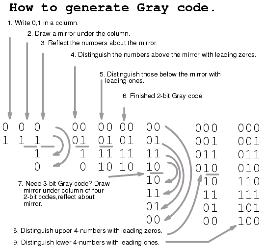
Tenga en cuenta que la secuencia del código Gray, arriba a la derecha, solo varía un bit a medida que avanzamos en la lista, o hacia abajo para completar la lista. Esta propiedad del código Gray suele ser útil en la electrónica digital en general. En particular, es aplicable a los mapas de Karnaugh.
Pasemos a algunos ejemplos de simplificación con mapas de Karnaugh de 3 variables. Mostramos cómo mapear los términos producto de la lógica no simplificada al K-map. Ilustramos cómo identificar grupos de celdas adyacentes, lo que conduce a una simplificación de la lógica digital por suma de productos.
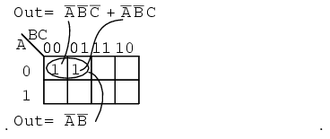
Arriba, colocamos los 1 en el mapa K para cada uno de los términos del producto, identificamos un grupo de dos y luego escribimos untérmino p(término de producto) para el único grupo como nuestro resultado simplificado.
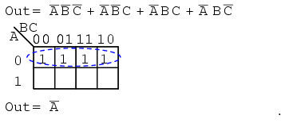
Al mapear los cuatro términos del producto anteriores se obtiene un grupo de cuatro cubiertos por términos booleanos.A'
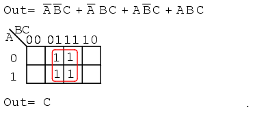
Al mapear los cuatro términos p se obtiene un grupo de cuatro, que está cubierto por una variableC.
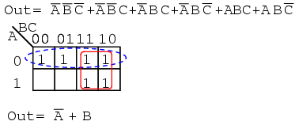
Después de mapear los seis términos p anteriores, identifique el grupo superior de cuatro, seleccione las dos celdas inferiores como un grupo de cuatro compartiendo las dos con dos más del otro grupo. Cubrir estos dos con un grupo de cuatro da un resultado más sencillo. Como hay dos grupos, habrá dos términos p en el resultado de la suma de productosA'+B
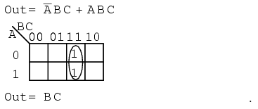
Los dos términos de producto anteriores forman un grupo de dos y se simplifican aBC
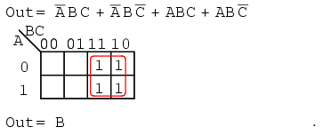
Al mapear los cuatro términos p se obtiene un solo grupo de cuatro, que es B
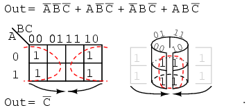
Al mapear los cuatro términos p anteriores se obtiene un grupo de cuatro. Visualice el grupo de cuatro enrollando los extremos del mapa para formar un cilindro, luego las celdas son adyacentes. Normalmente marcamos el grupo de cuatro como arriba a la izquierda. De las variables A, B, C, hay una variable común: C'. C' es un 0 en las cuatro celdas. El resultado final esC'.
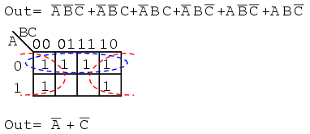
Las seis celdas anteriores de la ecuación no simplificada se pueden organizar en dos grupos de cuatro. Estos dos grupos deberían darnos dos términos p en nuestro resultado simplificado deA'+C'.
A continuación, revisamos el incinerador de desechos tóxicos del capítulo de álgebra booleana. Consulte el capítulo de álgebra booleana para obtener detalles sobre este ejemplo. Simplificaremos la lógica usando un mapa de Karnaugh.
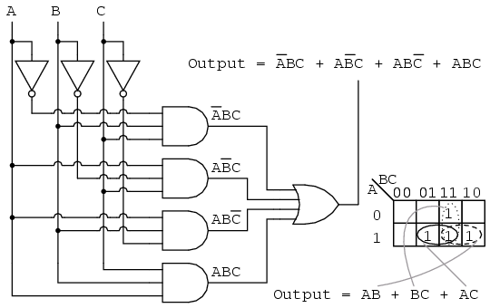
La ecuación booleana para la producción tiene cuatro términos producto. Mapee cuatro unos correspondientes a los términos p. Formando grupos de células, tenemos tres grupos de dos. Habrá tres términos p en el resultado simplificado, uno para cada grupo. Consulte el capítulo de álgebra booleana "Incinerador de desechos tóxicos" para obtener un diagrama de puerta del resultado, que se reproduce a continuación.
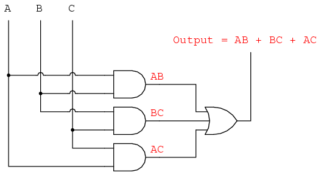
A continuación repetimos la simplificación del álgebra booleana del incinerador de desechos tóxicos para comparar.
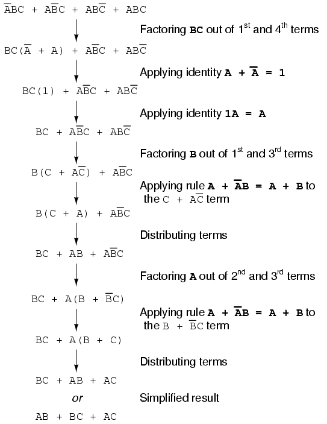
A continuación repetimos la solución del mapa de Karnaugh del incinerador de desechos tóxicos para compararla con la simplificación del álgebra booleana anterior. Este caso ilustra por qué el mapa de Karnaugh se utiliza ampliamente para la simplificación lógica.
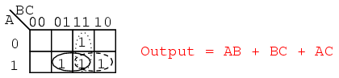
El método del mapa de Karnaugh parece más sencillo que la página anterior de álgebra booleana.
Larger 4-variable Karnaugh maps
Saber cómo generar código Gray debería permitirnos construir mapas más grandes. En realidad, todo lo que tenemos que hacer es mirar la secuencia de izquierda a derecha en la parte superior del mapa de 3 variables y copiarla en el lado izquierdo del mapa de 4 variables. Vea abajo.
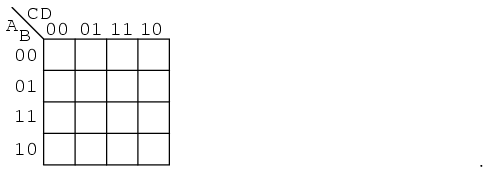
Los siguientes cuatro mapas de variables de Karnaugh ilustran la reducción de expresiones booleanas demasiado tediosas para el álgebra booleana. Las reducciones se podrían hacer con álgebra de Boole. Sin embargo, el mapa de Karnaugh es más rápido y sencillo, especialmente si hay muchas reducciones lógicas que hacer.
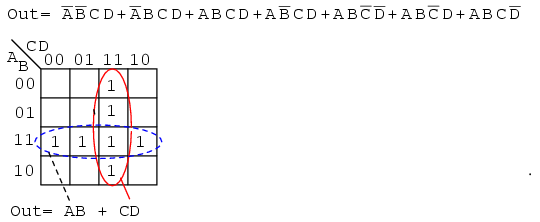
La expresión booleana anterior tiene siete términos producto. Están mapeados de arriba a abajo y de izquierda a derecha en el mapa K de arriba. Por ejemplo, el primer término PA'B'CDes la primera fila, tercera celda, correspondiente a la ubicación del mapaA=0, B=0, C=1, D=1. Los demás términos del producto se colocan de manera similar. Rodeando los grupos más grandes posibles, arriba se muestran dos grupos de cuatro. El grupo horizontal discontinuo corresponde al término de producto simplificado.AB. El grupo vertical corresponde al CD booleano. Como hay dos grupos, habrá dos términos de producto en el resultado de la suma de productos deOut=AB+CD.
Dobla las esquinas del mapa a continuación como si fuera una servilleta para que las cuatro celdas estén físicamente adyacentes.
Las cuatro celdas de arriba son un grupo de cuatro porque todas tienen variables booleanas.B' and D'en común. En otras palabras,B=0para las cuatro celdas, yD=0para las cuatro celdas. Las otras variables(A, B) are 0en algunos casos,1en otros casos con respecto a las cuatro celdas de las esquinas. Así, estas variables(A, B)no están involucrados con este grupo de cuatro. Este grupo único sale del mapa como un término de producto para el resultado simplificado:Out=B'C'
Para el mapa K a continuación, enrolle los bordes superior e inferior formando un cilindro formando ocho celdas adyacentes.
El grupo de ocho anterior tiene una variable booleana en común:B=0. Por lo tanto, el grupo de ocho está cubierto por un término p:B'. La expresión booleana original de ocho términos se simplifica aOut=B'
La siguiente expresión booleana tiene nueve términos p, tres de los cuales tienen tres booleanos en lugar de cuatro. La diferencia es que mientras cuatro términos booleanos de producto variable cubren una celda, los tres términos p booleanos cubren un par de celdas cada uno.
Los seis términos producto de cuatro variables booleanas se asignan de la forma habitual anterior como celdas individuales. Los tres términos de variables booleanas (tres cada uno) se asignan como pares de celdas, como se muestra arriba. Tenga en cuenta que estamos mapeando términos p en el mapa K, no sacándolos en este punto.
Para simplificar, formamos dos grupos de ocho. Las celdas de las esquinas se comparten con ambos grupos. Esto está bien. De hecho, esto conduce a una mejor solución que formar un grupo de ocho y un grupo de cuatro sin compartir celdas. La solución final esOut=B'+D'
A continuación asignamos la expresión booleana no simplificada al mapa de Karnaugh.
Arriba, tres de las células se forman en grupos de dos células. Una cuarta celda no se puede combinar con nada, lo que suele ocurrir en los problemas del "mundo real". En este caso, el término p booleanoABCDno cambia en el proceso de simplificación. Resultado:Out= B'C'D'+A'B'D'+ABCD
Muchas veces existe más de una solución de costo mínimo para un problema de simplificación. Tal es el caso que se ilustra a continuación.
Ambos resultados anteriores tienen cuatro términos producto de tres variables booleanas cada uno. Ambos son igualmente válidos.costo mínimosoluciones. La diferencia en la solución final se debe a cómo se agrupan las celdas como se muestra arriba. Una solución de costo mínimo es un diseño lógico válido con el número mínimo de puertas y el número mínimo de entradas.
A continuación, mapeamos la ecuación booleana no simplificada como de costumbre y formamos un grupo de cuatro como primer paso de simplificación. Puede que no sea obvio cómo recoger las células restantes.
Elija tres celdas más en un grupo de cuatro, en el centro de arriba. Todavía quedan dos celdas. El método de costo mínimo para recogerlos es agruparlos con celdas vecinas como grupos de cuatro como se muestra arriba a la derecha.
Como nota de advertencia, no intentes formar grupos de tres. Las agrupaciones deben ser potencias de 2, es decir, 1, 2, 4, 8...
A continuación tenemos otro ejemplo de dos posibles soluciones de coste mínimo. Comience formando un par de grupos de cuatro después de mapear las celdas.
Las dos soluciones dependen de si la única celda restante está agrupada con el primer o segundo grupo de cuatro como un grupo de dos celdas. Esa celda sale como cualquieraABECEDARIO' or ABD, tu elección. De cualquier manera, esta celda está cubierta por cualquiera de los términos del producto booleano. Los resultados finales se muestran arriba.
A continuación tenemos un ejemplo de simplificación utilizando el mapa de Karnaugh a la izquierda o el álgebra booleana a la derecha. TramaC'en el mapa como el área de todas las celdas cubiertas por la direcciónC=0, las 8 celdas a la izquierda del mapa. Luego, traza el sencillo.ABCDcelúla. Esa única celda forma un grupo de 2 celdas como se muestra, lo que se simplifica al término PABD, para un resultado final deOut = C' + ABD.
Este (arriba) es un raro ejemplo de un problema de cuatro variables que se puede reducir con álgebra booleana sin mucho trabajo, suponiendo que recuerdes los teoremas.
Minterm vs maxterm solution
Hasta ahora hemos estado encontrando soluciones de suma de productos (SOP) para problemas de reducción lógica. Para cada una de estas soluciones SOP, también existe una solución de producto de sumas (POS), que podría ser más útil, según la aplicación. Antes de trabajar en una solución de producto de sumas, debemos introducir alguna terminología nueva. El siguiente procedimiento para mapear términos de productos no es nuevo en este capítulo. Solo queremos establecer un procedimiento formal para minterms para compararlo con el nuevo procedimiento para maxterms.
A mintérminoes una expresión booleana que da como resultado1para la salida de una sola celda, y0s para todas las demás celdas en un mapa de Karnaugh o tabla de verdad. Si un minterm tiene un solo1y las celdas restantes como0s, parecería cubrir un área mínima de1s. La ilustración de arriba a la izquierda muestra el minterm.ABC, un solo término de producto, como un solo1en un mapa que es de otra manera0s. No hemos mostrado el0s en nuestros mapas de Karnaugh hasta este momento, ya que es habitual omitirlos a menos que sea necesario específicamente. Otro minitermABECEDARIO'se muestra arriba a la derecha. El punto a revisar es que la dirección de la celda corresponde directamente al minterm que se está mapeando. Es decir, la celda111corresponde al mintérminoABCarriba a la izquierda. Arriba a la derecha vemos que el mintermABECEDARIO'Corresponde directamente a la celda.010. Una expresión booleana o un mapa pueden tener varios minitérminos.
Con referencia a la figura anterior, resumamos el procedimiento para colocar un minterm en un K-map:
- Identifique el término minterm (término del producto) que se asignará.
- Escribe el valor numérico binario correspondiente.
- Utilice un valor binario como dirección para colocar un1en el mapa K
- Repita los pasos para otros minitérminos (términos P dentro de una suma de productos).
La mayoría de las veces, una expresión booleana constará de múltiples minitérminos correspondientes a múltiples celdas en un mapa de Karnaugh, como se muestra arriba. Los múltiples minterms en este mapa son los minterms individuales que examinamos en la figura anterior. El punto que revisamos como referencia es que el1Los datos salen del K-map como una dirección de celda binaria que se convierte directamente en uno o más términos de producto. Por directamente queremos decir que un0corresponde a una variable complementada, y una1corresponde a una variable verdadera. Ejemplo:010se convierte directamente aABECEDARIO'. No hubo reducción en este ejemplo. Sin embargo, tenemos un resultado de suma de productos a partir de los términos mínimos.
Con referencia a la figura anterior, resumamos el procedimiento para escribir la ecuación booleana reducida de suma de productos a partir de un mapa K:
- Formar grupos más grandes de1Es posible cubrir todos los minitérminos. Los grupos deben ser una potencia de 2.
- Escribe valores numéricos binarios para grupos.
- Convierta el valor binario en un término de producto.
- Repita los pasos para otros grupos. Cada grupo produce términos p dentro de una suma de productos.
Hasta ahora no hay nada nuevo, se ha redactado un procedimiento formal para tratar los minitérminos. Esto sirve como patrón para tratar con maxterms.
A continuación atacamos la función booleana que es0para una sola celda y1s para todos los demás.
A término máximoes una expresión booleana que da como resultado una0para la salida de una expresión de una sola celda, y1s para todas las demás celdas del mapa de Karnaugh o tabla de verdad. La ilustración de arriba a la izquierda muestra el término máximo.(A+B+C), un solo término de suma, como un solo0en un mapa que es de otra manera1s. Si un maxterm tiene un solo0y las celdas restantes como1s, parecería cubrir un área máxima de1s.
Hay algunas diferencias ahora que estamos tratando con algo nuevo, maxterms. El término máximo es un0, no un1en el mapa de Karnaugh. Un término máximo es un término de suma,(A+B+C)en nuestro ejemplo, no es un término de producto.
También parece extraño que(A+B+C)está mapeado en la celda000. Para la ecuaciónOut=(A+B+C)=0, las tres variables(A, B, C)individualmente debe ser igual a0. Solo(0+0+0)=0será igual0. Así colocamos nuestra suela0para minterm(A+B+C)en la celdaA,B,C=000en el K-map, donde todas las entradas están0. Este es el único caso que nos dará una0para nuestro maxterm. Todas las demás células contienen1s porque cualquier valor de entrada distinto de ((0,0,0) for (A+B+C)rendimientos1s tras la evaluación.
Con referencia a la figura anterior, el procedimiento para colocar un término máximo en el mapa K es:
- Identifique el término de suma que se asignará.
- Escriba el valor numérico binario correspondiente.
- formar el complemento
- Utilice el complemento como dirección para colocar una0en el mapa K
- Repita lo mismo para otros términos máximos (términos de suma dentro de la expresión Producto de sumas).
Otro término máximoA'+B'+C'se muestra arriba. Numérico000corresponde aA'+B'+C'. El complemento es111. Coloque un0para maxterm(A'+B'+C')en esta celda(1,1,1)del K-map como se muestra arriba.
¿Por qué debería(A'+B'+C')causar un0estar en la celda111? CuandoA'+B'+C' is (1'+1'+1'), todo1s en, que es(0+0+0)después de tomar complementos, tenemos la única condición que nos dará una0. Mucho1s se complementan con todos0s, que es0cuandoORed.
Una expresión o mapa booleano de producto de sumas puede tener varios términos máximos, como se muestra arriba. maxtérmino(A+B+C)produce valores numéricos111que complementa a000, colocando un0en la celda(0,0,0). maxtérmino(A+B+C')produce valores numéricos110que complementa a001, colocando un0en la celda(0,0,1).
Ahora que tenemos la configuración de k-map, lo que realmente nos interesa es mostrar cómo escribir una reducción del producto de sumas. Formar el0s en grupos. Ese sería un grupo de dos a continuación. Escriba el valor binario correspondiente al término suma que es(0,0,X). Tanto A como B son0para el grupo. Pero,Cson ambos0 and 1entonces escribimos unXcomo marcador de posición paraC. formar el complemento(1,1,X). Escribe el término de suma(A+B)descartando elCy elXque ocupó su lugar. En general, espere tener más términos de suma multiplicados en el resultado del Producto de sumas. Sin embargo, aquí tenemos un ejemplo sencillo.
Resumamos el procedimiento para escribir la reducción booleana del producto de sumas para un mapa K:
- Formar grupos más grandes de0Es posible, cubriendo todos los términos máximos. Los grupos deben ser una potencia de 2.
- Escriba un valor numérico binario para el grupo.
- Complemento del valor numérico binario para el grupo.
- Convierta el valor del complemento en un término de suma.
- Repita los pasos para otros grupos. Cada grupo produce un término de suma dentro de un resultado de Producto de sumas.
Ejemplo:
Simplifique la expresión booleana del producto de sumas a continuación y proporcione un resultado en formato POS.
Solución:
Transfiera los siete maxterms al siguiente mapa como0s. Asegúrese de complementar las variables de entrada para encontrar la ubicación adecuada de la celda.
Mapeamos el0s tal como aparecen de izquierda a derecha, de arriba a abajo en el mapa de arriba. Ubicamos los últimos tres maxterms con líneas guía.
Una vez que las celdas estén en su lugar arriba, forme grupos de celdas como se muestra a continuación. Los grupos más grandes darán un término suma con menos entradas. Menos grupos producirán menos términos de suma en el resultado.
Tenemos tres grupos, por lo que esperamos tener tres términos de suma en nuestro resultado POS anterior. El grupo de 4 celdas produce un término suma de 2 variables. Los dos grupos de 2 celdas nos dan dos términos de suma de 3 variables. Se muestran detalles de cómo llegamos a los términos de suma anteriores. Para un grupo, escriba la dirección de entrada del grupo binario, luego complétela, convirtiéndola en el término de suma booleano. El resultado final es producto de las tres sumas.
Ejemplo:
Simplifique la siguiente expresión booleana del producto de sumas y proporcione un resultado en formato SOP.
Solución:
Esto parece una repetición del último problema. Excepto que solicitamos una solución de suma de productos en lugar del producto de sumas que acabamos de terminar. Mapear el término máximo0s del Producto de sumas dado como en el problema anterior, abajo a la izquierda.
Luego complete lo implícito1s en las celdas restantes del mapa de arriba a la derecha.
Formar grupos de1s para cubrir todo1s. Luego escriba el resultado simplificado de la suma de productos como en la sección anterior de este capítulo. Esto es idéntico a un problema anterior.
Arriba mostramos tanto la solución de Producto de sumas, del ejemplo anterior, como la solución de Suma de productos del problema actual para comparar. ¿Cuál es la solución más sencilla? El POS utiliza puertas 3-O y puerta 1-Y, mientras que el SOP utiliza puertas 3-Y y puerta 1-O. Ambos utilizan cuatro puertas cada uno. Mirando más de cerca, contamos el número de entradas de puerta. El POS utiliza 8 entradas; el SOP utiliza 7 entradas. Según la definición de solución de costo mínimo, la solución SOP es más simple. Este es un ejemplo de una respuesta técnicamente correcta que es de poca utilidad en el mundo real.
La mejor solución depende de la complejidad y de la familia lógica que se utilice. La solución SOP suele ser mejor si se utiliza la familia lógica TTL, ya que las puertas NAND son el componente básico, que funciona bien con las implementaciones SOP. Por otro lado, una solución POS sería aceptable cuando se utiliza la familia lógica CMOS, ya que están disponibles todos los tamaños de puertas NOR.
Los diagramas de puerta para ambos casos se muestran arriba, Producto de sumas a la izquierda y Suma de productos a la derecha.
A continuación, analizamos más de cerca la versión de suma de productos de nuestra lógica de ejemplo, que se repite a la izquierda.
Sobre todo, las puertas AND de la izquierda han sido reemplazadas por puertas NAND a la derecha. La puerta OR en la salida se reemplaza por una puerta NAND. Para demostrar que la lógica AND-OR es equivalente a la lógica NAND-NAND, mueva las burbujas invertidas del inversor en la salida de las puertas 3-NAND a la entrada de la NAND final como se muestra yendo de arriba a la derecha a abajo a la izquierda.
Arriba a la derecha vemos que la puerta NAND de salida con entradas invertidas es lógicamente equivalente a una puerta OR según el teorema de DeMorgan y la doble negación. Esta información es útil para construir lógica digital en un entorno de laboratorio donde las puertas NAND de la familia lógica TTL están más disponibles en una amplia variedad de configuraciones que otros tipos.
El procedimiento para construir la lógica NAND-NAND, en lugar de la lógica AND-OR, es el siguiente:
- Producir un diseño lógico de suma de productos reducida.
- Al dibujar el diagrama de cableado del SOP, reemplace todas las puertas (tanto AND como OR) con puertas NAND.
- Las entradas no utilizadas deben vincularse a la lógica Alta.
- En caso de resolución de problemas, los nodos internos en el primer nivel de las salidas de la puerta NAND NO coinciden con los niveles lógicos del diagrama Y-O, sino que están invertidos. Utilice el diagrama lógico NAND-NAND. Sin embargo, los insumos y el producto final son idénticos.
- Etiquete los paquetes múltiples U1, U2, etc.
- Utilice la hoja de datos para asignar números de pin a las entradas y salidas de todas las puertas.
Ejemplo:
Revisemos un problema anterior que involucra una minimización de SOP. Produzca una solución de producto de sumas. Compare la solución POS con el SOP anterior.
Solución:
Arriba a la izquierda tenemos el problema original que comienza con una expresión booleana no simplificada de 9 mintérminos. Al revisar, formamos cuatro grupos de 4 celdas para producir un resultado SOP de 4 términos de producto, abajo a la izquierda.
En la figura del medio, arriba, completamos los espacios vacíos con lo implícito0s. El0Los s forman dos grupos de 4 células. El grupo azul sólido es(A'+B), el grupo rojo discontinuo es(C'+D). Esto produce dos términos de suma en el resultado del Producto de sumas, arriba a la derechaOut = (A'+B)(C'+D)
La comparación de la simplificación del SOP anterior (izquierda) con la simplificación del POS (derecha) muestra que el POS es la solución de menor costo. El SOP utiliza 5 puertas en total, el POS utiliza sólo 3 puertas. Esta solución POS incluso parece atractiva cuando se utiliza lógica TTL debido a la simplicidad del resultado. Podemos encontrar puertas AND y una puerta OR con 2 entradas.
Los diagramas de puerta SOP y POS se muestran arriba para nuestro problema de comparación.
Dadas las configuraciones de pines para las puertas de circuito integrado de la familia lógica TTL a continuación, etiquete el diagrama de maxterm arriba a la derecha con designadores de circuito (U1-a, U1-b, U2-a, etc.) y números de pines.
Cada paquete de circuito integrado que utilicemos recibirá un designador de circuito: U1, U2, U3. Para distinguir entre las puertas individuales dentro del paquete, se identifican como a, b, c, d, etc. El paquete de inversor hexagonal 7404 es U1. Los inversores individuales que contiene son U1-a, U1-b, U1-c, etc. U2 está asignado a la puerta OR cuádruple 7432. U3 está asignado a la puerta AND cuádruple 7408. Con referencia a los números de pin en el diagrama del paquete anterior, asignamos números de pin a todas las entradas y salidas de la puerta en el diagrama esquemático a continuación.
Ahora podemos construir este circuito en un laboratorio. O podríamos diseñar unplaca de circuito impresopor ello. Una placa de circuito impreso contiene "cableado" de lámina de cobre respaldado por un sustrato no conductor de fibra de vidrio fenólica o epoxi. Las placas de circuito impreso se utilizan para producir circuitos electrónicos en masa. Conecte a tierra las entradas de las puertas no utilizadas.
Etiquete el diagrama de la solución POS anterior arriba a la izquierda (tercera figura atrás) con designadores de circuito y números de pines. Esto será similar a lo que acabamos de hacer.
Podemos encontrar puertas AND de 2 entradas, 7408 en el ejemplo anterior. Sin embargo, tenemos problemas para encontrar una puerta OR de 4 entradas en nuestro catálogo TTL. El único tipo de puerta con 4 entradas es la puerta NAND 7420 que se muestra arriba a la derecha.
Podemos convertir la puerta NAND de 4 entradas en una puerta OR de 4 entradas invirtiendo las entradas a la puerta NAND como se muestra a continuación. Entonces usaremos la puerta NAND de 4 entradas 7420 como puerta OR invirtiendo las entradas.
No usaremos inversores discretos para invertir las entradas a la puerta NAND de 4 entradas 7420, sino que la manejaremos con puertas NAND de 2 entradas en lugar de las puertas AND requeridas en la solución SOP, minterm. La inversión en la salida de las puertas NAND de 2 entradas proporciona la inversión para la puerta OR de 4 entradas.
El resultado se muestra arriba. Es la única forma práctica de construirlo con puertas TTL mediante el uso de lógica NAND-NAND que reemplaza la lógica AND-OR.
Σ (sum) and Π (product) notation
Como referencia, esta sección presenta la terminología utilizada en algunos textos para describir los minterms y maxterms asignados a un mapa de Karnaugh. De lo contrario, no hay material nuevo aquí.
Σ (sigma) indica suma y "m" minúscula indica mintérminos. Σm indica suma de mintérminos. Se revisa el siguiente ejemplo para ilustrar nuestro punto. En lugar de una descripción de una ecuación booleana de lógica no simplificada, enumeramos los minitérminos.
f(A,B,C,D) = Σ metro(1, 2, 3, 4, 5, 7, 8, 9, 11, 12, 13, 15)
or
f(A,B,C,D) = Σ(metro1,m2,m3,m4,m5,m7,m8,m9,m11,m12,m13,m15)
Los números indican la ubicación o dirección de la celda dentro de un mapa de Karnaugh como se muestra abajo a la derecha. Esta es sin duda una forma compacta de describir una lista de minitérminos o celdas en un K-map.
La solución de suma de productos no se ve afectada por la nueva terminología. los minterms,1s, en el mapa se han agrupado como de costumbre y se ha escrito una solución de suma de productos.
A continuación, mostramos la terminología para describir una lista de maxterms. El producto se indica con la letra griega Π (pi) y la "M" mayúscula indica términos máximos. ΠM indica producto de maxterms. El mismo ejemplo ilustra nuestro punto. La descripción de la ecuación booleana de la lógica no simplificada se reemplaza por una lista de términos máximos.
f(A,B,C,D) = ΠM(2, 6, 8, 9, 10, 11, 14)
or
f(A,B,C,D) = Π(M2, M6, M8, m9, M10, M11, M14)
Una vez más, los números indican las ubicaciones de las direcciones de las celdas de K-map. Para maxterms esta es la ubicación de0s, como se muestra a continuación. Una solución de Producto de sumas se completa de la manera habitual.
Don't care cells in the Karnaugh map
Hasta este punto hemos considerado problemas de reducción lógica donde las condiciones de entrada estaban completamente especificadas. Es decir, una tabla de verdad de 3 variables o mapa de Karnaugh tenía 2n= 23u 8 entradas, una tabla o mapa completo. No siempre es necesario completar la tabla de verdad completa para algunos problemas del mundo real. Es posible que tengamos la opción de no completar la tabla completa.
Por ejemplo, cuando trabajamos con números BCD (decimal codificado en binario) codificados como cuatro bits, es posible que no nos importe ningún código por encima del rango BCD de (0, 1, 2...9). Los códigos binarios de 4 bits para números hexadecimales (Ah, Bh, Ch, Eh, Fh) no son códigos BCD válidos. Por lo tanto, no tenemos que completar esos códigos al final de una tabla de verdad, o K-map, si no nos interesa. Normalmente no nos importaría completar esos códigos porque esos códigos (1010, 1011, 1100, 1101, 1110, 1111) nunca existirán mientras tratemos solo con números codificados en BCD. Estos seis códigos inválidos sonno me importaen lo que a nosotros respecta. Es decir, no nos importa qué salida produce nuestro circuito lógico, ya que a estos no les importa.
No me importa en un mapa de Karnaugh, o en una tabla de verdad, puede ser cualquiera de las dos cosas1s o0s, siempre y cuando no nos importe cuál sea la salida para una condición de entrada que nunca esperamos ver. Trazamos estas celdas con un asterisco, *, entre las normales1arena0s. Al formar grupos de células, trate la célula que no le importa como una1o un0, o ignorar los "no me importa". Esto es útil si nos permite formar un grupo más grande del que sería posible sin el "no me importa". No es necesario agrupar todos o alguno de los "no le importa". Úselos solo en grupo si simplifica la lógica.
Arriba hay un ejemplo de una función lógica donde la salida deseada es1para entradaABC = 101sobre el rango de000 to 101. No nos importa cuál sea la salida para las otras posibles entradas (110, 111). Mapea a esos dos como si no les importara. Mostramos dos soluciones. La solución de la derecha Out = AB'C es la solución más compleja ya que no utilizamos las celdas de no importa. La solución en el medio, Out=AC, es menos compleja porque agrupamos una celda de "no me importa" con la única1para formar un grupo de dos. La tercera solución, un Producto de sumas a la derecha, resulta de agrupar un no me importa con tres ceros formando un grupo de cuatro.0s. Esto es lo mismo, menos complejo,Out=AC. Hemos ilustrado que las celdas de "no importa" pueden usarse como1s o0s, lo que sea útil.
Se pidió a la clase de electrónica de Lightning State College que construyera la lógica de la lámpara para una exhibición de bicicletas estacionarias en el museo de ciencias local. A medida que un ciclista aumenta su velocidad de pedaleo, se encenderán luces en una pantalla de gráfico de barras. Ninguna lámpara se encenderá si no hay movimiento. A medida que aumenta la velocidad, se enciende la lámpara inferior, L1, luego L1 y L2, luego L1, L2 y L3, hasta que todas las lámparas se encienden a la velocidad más alta. Una vez que todas las luces se enciendan, ningún aumento adicional de velocidad tendrá ningún efecto en la pantalla.
Un pequeño generador de CC acoplado al neumático de la bicicleta genera un voltaje proporcional a la velocidad. Impulsa un tablero de tacómetro que limita el voltaje en el extremo superior de la velocidad donde se encienden todas las luces. Ningún aumento adicional de la velocidad puede aumentar el voltaje más allá de este nivel. Esto es crucial porque el convertidor A a D (Analógico a Digital) genera un código de 3 bits,ABC, 23u 8 códigos, pero solo tenemos cinco lámparas.Aes la parte más significativa,Cel bit menos significativo.
La lógica de la lámpara debe responder a los seis códigos de la A a la D. ParaABC=000, no hay movimiento, no hay lámparas encendidas. Para los cinco códigos(001 a 101)Las lámparas L1, L1 y L2, L1 y L2 y L3 se encenderán hasta todas las lámparas, a medida que aumente la velocidad, el voltaje y el código A a D (ABC). No nos importa la respuesta a los códigos de entrada.(110, 111)porque estos códigos nunca saldrán de la A a la D debido a la limitación en el bloque tacómetro. Necesitamos diseñar cinco circuitos lógicos para accionar las cinco lámparas.
Desde entonces, ninguna de las lámparas se enciende duranteABC=000desde la A hasta la D, introduzca un0en todos los K-maps para celularABC=000. Ya que no nos importan los códigos que nunca se encontrarán(110, 111), ingrese asteriscos en esas dos celdas en los cinco K-maps.
La lámpara L5 solo se encenderá para el códigoABC=101. Introduzca un1en esa celda y cinco0s en las celdas vacías restantes de L5 K-map.
L4 se iluminará inicialmente para el códigoABC=100, y permanecerá iluminado para cualquier código mayor,ABC=101, porque todas las lámparas debajo de L5 se encenderán cuando se encienda L5. Ingresar1s en células100 and 101del mapa L4 para que se encienda para esos códigos. cuatro0Llenamos las celdas L4 restantes.
L3 se iluminará inicialmente para el códigoABC=011. También se iluminará siempre que se iluminen L5 y L4. Introduzca tres1s en células011, 100, 101para el mapa L3. llenar tres0s en las celdas L3 restantes.
luces L2 paraABC=010y códigos mayores. Llenar1s en células010, 011, 100, 101, y dos0s en las celdas restantes.
El único momento en que L1 no se enciende es porque no hay movimiento. Ya hay un0en la celdaABC=000. Las otras cinco células reciben1s.
Agrupa el1Es como se muestra arriba, usando don't cares siempre que resulte un grupo más grande. El mapa L1 muestra tres términos de producto, correspondientes a tres grupos de 4 celdas. Usamos ambos "no me importa" en dos de los grupos y uno "no me importa" en el tercer grupo. El don't care nos permitió formar grupos de cuatro.
De manera similar, los mapas L2 y L4 producen grupos de 4 células con la ayuda de las células que no le importan. La reducción de L4 es sorprendente porque la lámpara L4 está controlada por el bit más significativo del convertidor A a D,L5=A. No se requieren puertas lógicas para la lámpara L4. En los mapas L3 y L5, las celdas individuales forman grupos de dos con celdas que no les importan. En los cinco mapas, la ecuación booleana reducida es menos compleja que sin la ecuación booleana.
El diagrama de puerta para el circuito está arriba. Las salidas de las cinco ecuaciones de K-map impulsan los inversores. Tenga en cuenta que la L1ORLa puerta no es una puerta de 3 entradas sino una puerta de 2 entradas que tiene entradas.(A+B), C, salidaA+B+C The colector abiertoinversores,7406, son deseables para controlar los LED, aunque no forman parte del diseño lógico de K-map. La salida de una compuerta de colector abierto o inversor tiene un circuito abierto en el colector interno del paquete de circuito integrado para que toda la corriente del colector pueda fluir a través de una carga externa. Un nivel alto activo en cualquiera de los inversores reduce la salida, extrayendo corriente a través del LED y la resistencia limitadora de corriente. Los LED probablemente serían parte de un relé de estado sólido que acciona lámparas de 120 VCA para una exhibición de museo, que no se muestra aquí.
Larger 5 & 6-variable Karnaugh maps
Los mapas de Karnaugh más grandes reducen los diseños lógicos más grandes. ¿Qué tan grande es lo suficientemente grande? Eso depende del número de entradas,fanáticos, al circuito lógico considerado. Una de las grandes empresas de lógica programable tiene la respuesta.
Los propios datos de Altera, extraídos de su biblioteca de diseños de clientes, respaldan el valor de la heterogeneidad. Al examinar los conos lógicos, mapearlos en nodos basados en LUT y ordenarlos por la cantidad de entradas que serían mejores en cada nodo, Altera descubrió que la distribución de fan-ins era casi plana entre dos y seis entradas, con un buen pico en cinco.
La respuesta es no más de seis entradas para la mayoría de los diseños y cinco entradas para el diseño lógico promedio. A continuación se muestra el mapa de Karnaugh de cinco variables.
Arriba se muestra la versión anterior del mapa K de cinco variables, un mapa de código Gray o mapa de reflexión. La parte superior (y el lado de un mapa de 6 variables) del mapa está numerada en código Gray completo. El código Gray se refleja aproximadamente en la mitad del código. Este mapa de estilo se encuentra en textos más antiguos. El estilo preferido más nuevo se encuentra a continuación.
La versión superpuesta del mapa de Karnaugh, que se muestra arriba, son simplemente dos (cuatro para un mapa de 6 variables) mapas idénticos, excepto por el bit más significativo de la dirección de 3 bits en la parte superior. Si miramos la parte superior del mapa, veremos que la numeración es diferente al mapa de código Gray anterior. Si ignoramos el dígito más significativo de los números de 3 dígitos, la secuencia00, 01, 11, 10está en el encabezado de ambos submapas del mapa superpuesto. La secuencia de ocho números de 3 dígitos no es código Gray. Aunque la secuencia de cuatro de los dos bits menos significativos sí lo es.
Pongamos en práctica nuestro mapa de Karnaugh de 5 variables. Diseñe un circuito que tenga una entrada binaria de 5 bits (A, B, C, D, E), siendo A el MSB (bit más significativo). Debe producir una salida lógica Alta para cualquier número primo detectado en los datos de entrada.
Mostramos la solución anterior en el mapa de código Gray (reflexión) anterior como referencia. Los números primos son (1,2,3,5,7,11,13,17,19,23,29,31). Trazar un1en cada celda correspondiente. Luego, proceda con la agrupación de las células. Termine escribiendo el resultado simplificado. Tenga en cuenta que el grupo de 4 celdas A'B'E consta de dos pares de celdas a ambos lados de la línea especular. Lo mismo ocurre con el grupo de dos células AB'DE. Es un grupo de 2 celdas que se reflejan sobre la línea del espejo. Cuando utilice esta versión de K-map, busque imágenes reflejadas en la otra mitad del mapa.
Out = A'B'E + B'C'E + A'C'DE + A'CD'E + ABCE + AB'DE + A'B'C'D
A continuación mostramos la versión más común del mapa de 5 variables, el mapa superpuesto.
Si comparamos los patrones en los dos mapas, algunas de las celdas en la mitad derecha del mapa se mueven ya que la dirección en la parte superior del mapa es diferente. También debemos adoptar un enfoque diferente para detectar puntos en común entre las dos mitades del mapa. Superponga la mitad del mapa sobre la otra mitad. Cualquier superposición del mapa superior al mapa inferior es un grupo potencial. La siguiente figura muestra que el grupo AB'DE está compuesto por dos celdas apiladas. El grupo A'B'E consta de dos pares de celdas apiladas.
Para elA'B'Egrupo de 4 celdasABCDE = 00xx1para el grupo. Es decir A,B,E son iguales001respectivamente para el grupo. Y,CD=xxes decir, varía, no hay puntos en común enCD=xxpara el grupo de 4 celdas. DesdeABCDE = 00xx1, el grupo de 4 celdas está cubierto porA'B'XXE = A'B'E.
El mapa superpuesto de 5 variables anterior se muestra apilado.
A continuación se muestra un ejemplo de un mapa de Karnaugh de seis variables. Hemos apilado mentalmente los cuatro submapas para ver el grupo de 4 celdas correspondientes aOut = C'F'
Un comparador de magnitud (utilizado para ilustrar un mapa K de 6 variables) compara dos números binarios, indicando si son iguales, mayores o menores entre sí en tres salidas respectivas. Un comparador de magnitud de tres bits tiene dos entradas A2A1A0y B2B1B0Un comparador de magnitud de circuito integrado (7485) en realidad tendría cuatro entradas, pero el siguiente mapa de Karnaugh debe mantenerse en un tamaño razonable. Sólo resolveremos elA>Bproducción.
A continuación, un mapa de Karnaugh de 6 variables ayuda a simplificar la lógica de un comparador de magnitud de 3 bits. Este es un tipo de mapa superpuesto. El código de dirección binario en la parte superior e inferior del lado izquierdo del mapa no es un código Gray completo de 3 bits. Aunque los códigos de dirección de 2 bits de los cuatro submapas son códigos Gray. Encuentre expresiones redundantes apilando los cuatro submapas uno encima del otro (como se muestra arriba). Podría haber celdas comunes a los cuatro mapas, aunque no en el ejemplo siguiente. Tiene celdas comunes a pares de submapas.
La salida A>B anterior es ABC>XYZ en el mapa siguiente.
dondequiera que seaABCes mayor queXYZ, a 1está trazado. en la primera lineaABC=000no puede ser mayor que ninguno de los valores deXYZ. No1s en esta línea. En la segunda línea,ABC=001, solo la primera celdaABCXYZ= 001000 is ABCmás que XYZ. un solo1se ingresa en la primera celda de la segunda línea. La cuarta línea,ABC=010, tiene un par de1s. La tercera línea,ABC=011tiene tres1s. Así, el mapa se llena de1s en cualquier celda dondeABCes mayor queXXZ.
Al agrupar celdas, forme grupos con submapas adyacentes si es posible. Todos menos un grupo de 16 celdas involucran celdas de pares de submapas. Busque los siguientes grupos:
- 1 group of 16-cells
- 2 groups of 8-cells
- 4 groups of 4-cells
Un grupo de 8 celdas se compone de un grupo de 4 celdas en el submapa superior superpuesto a un grupo similar en el mapa inferior izquierdo. El segundo grupo de 8 celdas está compuesto por un grupo similar de 4 celdas en el submapa derecho que se superpone al mismo grupo de 4 celdas en el mapa inferior izquierdo.
Los cuatro grupos de 4 celdas se muestran en el mapa de Karnaugh de arriba con los términos de producto asociados. Junto con los términos del producto para los dos grupos de 8 celdas y el grupo de 16 celdas, se muestra la reducción final de la suma de productos, los siete términos. contando el1s en el mapa, hay un total de 16+6+6=28 unos. Antes de la reducción lógica de K-map, habría habido 28 términos de producto en nuestra salida de SOP, cada uno con 6 entradas. El mapa de Karnaugh arrojó siete términos de producto de cuatro o menos entradas. ¡Esto es realmente de lo que se tratan los mapas de Karnaugh!
El diagrama de cableado no se muestra. Sin embargo, aquí está la lista de piezas para el comparador de magnitud de 3 bits para ABC>XYZ que utiliza 4 piezas de la familia lógica TTL:
- 1 ea 7410 triple 3-input NAND gate AX', ABY', BX'Y'
- 2 ea 7420 dual 4-input NAND gate ABCZ', ACY'Z', BCX'Z', CX'Y'Z'
- 1 ea 7430 8-input NAND gate for output of 7-P-terms
- REVISAR:
- El álgebra booleana, los mapas de Karnaugh y el CAD (diseño asistido por computadora) son métodos de simplificación lógica. El objetivo de la simplificación lógica es una solución de costo mínimo.
- Una solución de costo mínimo es una reducción lógica válida con el número mínimo de puertas y el número mínimo de entradas.
- Los diagramas de Venn nos permiten visualizar expresiones booleanas, facilitando la transición a mapas de Karnaugh.
- Las celdas del mapa de Karnaugh están organizadas en orden de código Gray para que podamos visualizar la redundancia en expresiones booleanas, lo que resulta en una simplificación.
- Las expresiones de suma de productos (suma de minters) más comunes se implementan como puertas AND (productos) que alimentan una única puerta OR (suma).
- Las expresiones de suma de productos (lógica Y-O) son equivalentes a una implementación NAND-NAND. Todas las puertas AND y OR se reemplazan por puertas NAND.
- Las expresiones de producto de sumas, que se utilizan con menos frecuencia, se implementan como puertas OR (sumas) que se alimentan de una única puerta AND (producto). Las expresiones de producto de sumas se basan en la0s, maxterms, en un mapa de Karnaugh.
Lecciones en circuitos eléctricoscopyright (C) 2000-2023 Tony R. Kuphaldt, según los términos y condiciones delCC BY License.